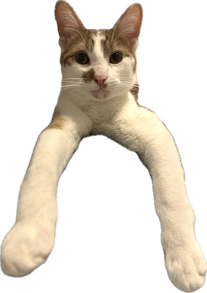
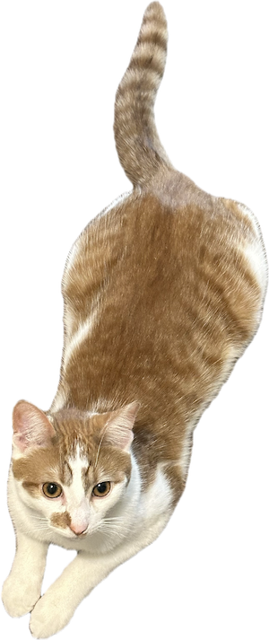
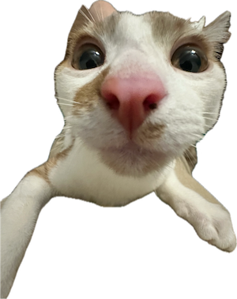
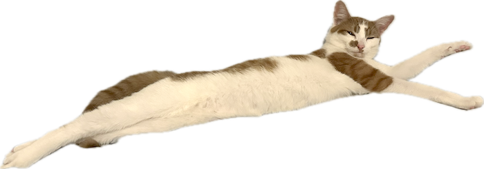
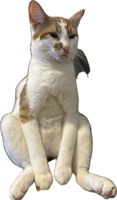
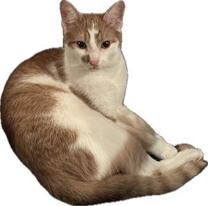
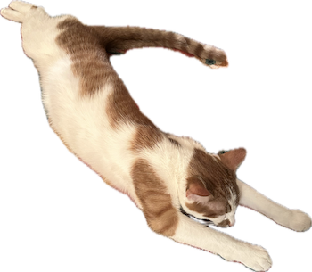

Welcome to my page :3
My favourite food is chicken :3
I ate a whole turkey over christmas break
I am 8 months old
I like to pee in the same place everytime in the litterbox
My dream is to play everyday :)